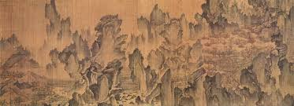

안평대군의 꿈,
이제는 우리 품으로 돌아와야 할 시간
몽유도원도(夢遊桃源圖)란?
조선의 화가 안견이 안평대군의 꿈 이야기를 듣고 사흘 만에 완성한 전설적인 그림입니다. 현재 우리 곁에 없는 이 위대한 문화유산의 이야기를 소개합니다.
꿈을 그린 그림
1447년, 세종의 셋째 아들 안평대군이 복숭아꽃 만발한 이상향을 거니는 꿈을 꿉니다. 그는 당대 최고의 화가였던 안견에게 자신의 꿈을 설명했고, 안견은 그 이야기를 바탕으로 단 3일 만에 비단 위 수묵담채로 꿈속 풍경을 완벽하게 그려냈습니다. 이것이 바로 현실과 꿈의 경계를 넘나드는 독창적인 구성을 자랑하는 '몽유도원도'입니다.
제작연도: 1447년
크기: 38.7 x 106.5 cm (두루마리)
현재 소장처: 일본 덴리대학 중앙도서관
우리가 잃어버린 가치
몽유도원도는 단순한 그림 한 점이 아닙니다. 이 그림이 왜 조선 초기 최고의 걸작으로 불리는지, 그 안에 담긴 다층적인 가치를 직접 확인해보세요. 각 항목을 클릭하여 자세한 내용을 볼 수 있습니다.
조선 초기 산수화의 정점
안견의 독창적인 화풍이 집대성된 작품으로, 웅장하면서도 환상적인 분위기를 자아냅니다. 여러 시점을 하나의 화면에 담아내는 과감한 구성과 필법은 후대 화가들에게 큰 영향을 주었으며, 현재까지도 한국 미술사상 최고의 산수화로 평가받고 있습니다.
캠페인 참여하기
여러분의 작은 행동 하나하나가 모여 큰 변화를 만들 수 있습니다. 아래 방법들을 통해 우리의 목소리를 세상에 알려주세요.
💬
SNS 챌린지 참여
'나의 꿈, 우리의 꿈' 챌린지에 동참하여 몽유도원도 반환의 염원을 널리 알려주세요.
#몽유도원도_우리품으로
❤️
이야기 공유하기
이 페이지를 친구와 가족에게 공유하여 몽유도원도의 가치와 반환의 필요성을 함께 알려주세요.